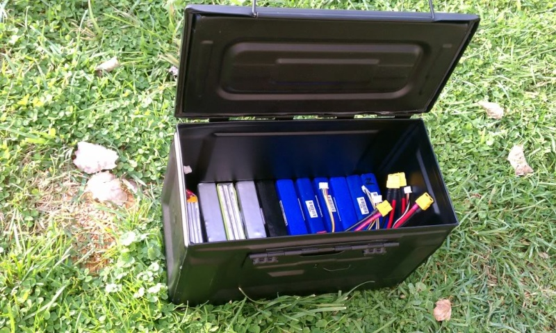

Les dangers des batteries lithium
Dans cet article nous allons voir les dangers liés aux batteries lithium et comment s’en protéger.
Les batteries au lithium (lipo)
Ce type de batterie à de nombreux avantage que ce soit au niveau de sa capacité ou au niveau de son poids. On les retrouve partout : téléphones, ordinateurs, drones ainsi que nos chers modèles. Mais elles peuvent être très dangereuses car les matériaux qui la compose sont assez instables, il est donc important de bien les chouchoutées pour leur garantir une bonne durée de vie.
Les dangers qu’elles représentent
Les batteries lithium peuvent :
- Explosées
- Prendre feu
Il est donc important de bien entreposé ses batteries afin de garantir un minimun de sécurité. Imaginez si votre battarie prend feu dans votre garage pendant la nuit, si elle n’est pas protégée, je vous laisse imaginez les dégâts qu’elle peut causer.
Comment éviter les dangers ?
Le plus important est la charge de ce type de batterie : n’utilisez pas n’importe quel chargeur. Une batterie lithium se charge d’une façon bien précise. Je ne vais pas rentrer dans les détails puisque de nombreux sites expliquent la charge de ces batteries :). Pour ma part, j’utilise le chargeur imax B6. Il permet de recevoir une alimentation 230v/12v, parfait pour la maison et le terrain. Il permet aussi de charger des batteries jusqu’à 6S.
Maintenant que vous savez comment bien charger vos batteries, il vient la question comment stocker ses batteries ? Elles doivent être stockées dans un endroit sec avec une température ambiante se situant aux alentours de 20°C. Il peut être très intéressant de se procurer des sacs anti-feu pour stocker sa batterie mais surtout lors de la charge, comme ça si votre batterie prend feu vous serez protégé.
Lorsque vous avez beaucoup de batteries, vous pouvez les stockées dans des caisses en métal. De nombreux modélistes utilisent cette technique et je vous la recommande.

Dernier élément est des plus important, pour assurer une bonne durée de vie à votre batterie et une bonne sécurité, ne laisser pas vos batteries charger à 100%. Si vous n’utilisez pas votre batterie après votre session, pensez à utiliser votre chargeur pour décharger la batterie ce qui évitera qu’elle ne soit trop instable.
Dernière info, si votre batterie est gonflée, débrancher la tout de suite et jeter là car elle est morte et pourrait explosée ou brulée.
Sur ce, j’espère vous avoir apporté des informations et n’oubliez pas, laissez moi un commentaire si vous avez des retours. Je vous souhaite une bonne session :)